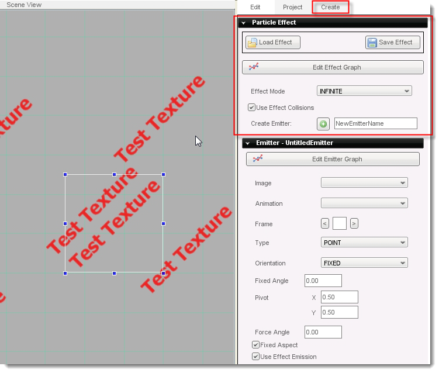
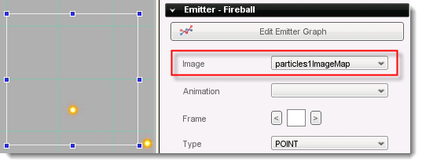
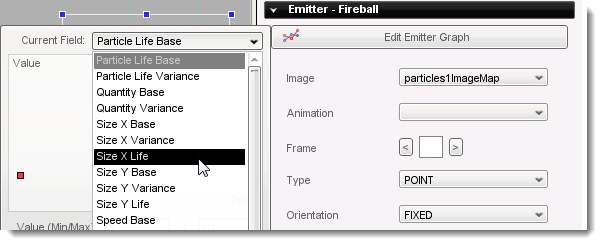

Torque 2D - Particles Tutorial
In this tutorial, you'll learn how to create particle effects in Torque 2D (T2D). Particle effects are commonly used for things like explosions, rain, smoke, and lots of other cool special effects. With practice, you'll be able to use the T2D particle builder to create some really amazing visual effects. To be exact, a 'particle effect' is a group of similar graphics that combine to make an interesting visual effect. Particle effects are generated automatically by a set of parameters that can be edited in Torque 2D. They also move automatically according to a similar set of parameters. One example of a particle effect is a cloud of smoke that is made of a bunch of small smoke-puff graphics that move around in a cluster. Another example would be rain, which might be made of a bunch of raindrops that move from the top of the screen to the bottom.
To
prepare for this tutorial, you need to have additional particles and assets currently not in the T2D install. Next, run Torque 2D and load the TutorialBase
project (if it's not already loaded) by choosing Open Project...
from the file menu and selecting games/TutorialBase/project.t2dProj.
Then, create a new scene. Finally, save this new scene as "ParticleTutorial".
The Torque 2D particle system is extremely versatile and includes a multitude of features. This allows you to create, effectively, an infinite number of cool effects. When dealing with something that has this many options, it's usually good to have an idea of what you want to create before you start working. For this tutorial, we'll be making a simple explosion that consists of fire shooting out in all directions with a puff of smoke in the center.
To see some examples of particle effects, open the Particle Effect section in the Create Tab. In there, you'll see many examples. When you hover over them with the mouse, you can see them animate. These particle effects can be dragged into the Scene View if you want to see them in action. When you are done viewing them, you can select them by clicking on the center of the effect and pressing the Delete key.

To
start working on our new effect, drag the first entry, newEffect.eff,
onto the Scene View. It starts out emitting a "Test
Texture" graphic by default. In order to start editing its
properties, go to the Edit tab and open the Particle Effect
section. Note that if you click on the graph icon on the left of this
section's label, it will open the graph editor rather than the
Particle Effect section itself. Also, in order to get a good
view of the Edit tab, you may want to drag its left border
further to the left so that you can read all of the properties.
Before you dive into making an effect, let's talk about a couple of important particle concepts in Torque 2D: 'effects' and 'emitters'. A particle 'effect' is the whole particle effect that we save off, including one or more emitters. An 'emitter' is a component of a particle effect which will generally create one type of particle. For example, in this tutorial the fire will be created by one emitter, and the smoke by another. The particle 'effect' will be the combination of these two emitters. This technique of combining multiple emitters can make some really mind-blowing particle effects.
First, Type "Fireball" into the Create Emitter text box and press the plus sign next to it. Then, click the big “Delete This Emitter” button on the default test emitter. A new Emitter subsection appears in the Particle Effect section. We're still not seeing anything in the Scene View, but that's about to change. In the Emitter subsection, find the Image dropdown, which contains all the available sprites in the project, and select particles1ImageMap. Now you can see some tiny fireballs shooting out in a circle. Remember, you can zoom in and out of the Scene View with the '+' and '-' keys if you want a better look.

So now we've created our 'emitter' that is spraying out 'particles': the fireballs. Already this effect is pretty neato, but it's definitely not the explosion we're looking for. For one thing, the fireballs are too small and they go too far. For another, we don't want them shooting out in this strange pattern. Before going on, press the Save Effect button and name the new effect "simpleExplosion.eff". Remember to use this save button whenever you want to save your particle effects... simply saving a scene that contains a particle effect will not save the particle effect in it!
We'll cover the properties shown in the Particle Effect and Particle Emitter sections later. For now, we're going to explore the real powerhouse of T2D particle system... the graph editor. We want to edit the graph of our emitter, so click on the graph icon next to the Emitter - Fireball label. The dialog that pops up is the graph editor, which is used to edit our particles' properties over time. If you don't understand what that means, you will by the end of this tutorial.
To see a list of emitter properties that you can access with the graph, click the Current Field dropdown (as shown in Figure 3). Dang, that's a lot of options! That's why it's a good idea to have some idea what you're trying to create before you jump in. Select Size X Life from the list. This property defines the size of our particles during their lifetime. The point on the far left is the starting point. Click on the point and you'll see its starting value, which is 0,1. The first of these numbers is the time, and the second number is the value. In this case, at time zero (when the particle is created) the Size X Life value is one. Drag that point up and down. You can see your particles change size as you do this. Leave the point at around 0,3.5. If your particle effect is hidden behind the graph editor, move it so you can see it as you work, like this:
Now, we want to make our fireballs get smaller and smaller until they disappear a little ways from the selection box of our particle. To do this, add a new point in the middle area of the graph by clicking there. Drag the point around until the fireballs shrink to nothing just outside the selection box. What you are doing is creating a graph of the particles' size. They start full size at time zero (the 0,3.5 point), then shrink as time progresses to the right.
If you need to delete a point in the graph editor, you can simply right-click on it. Note that you are not allowed to delete the point at time 0 (the far left point).
Right now the fireballs just shoot out and shrink, then disappear instantly... what we really want is for them to fade out quickly at the end, like a real explosion. To do this we'll use the property called Visibility Life, which controls the particles' transparency. In the graph editor Current Field dropdown, select that property. To begin with, create a point in the middle of the graph, then drag it all the way to the bottom. Now drag that point left and right until you can see the particles fading out at the end of their lifespans, but make sure they still last long enough to reach the edge of the selection box. This makes the particles fade gradually throughout their life, but what we really want is for them to stay at full intensity until about halfway through their life, then fade out. All we have to do is create a new graph point between the two points you already have, and drag that point straight up to the top of the graph. Now, when a particle is created it is fully visible. It stays that way until halfway through its life, then it fades out to nothing. If you have trouble seeing this effect, close the graph editor and zoom into your particle effect with the '+' key.
Okay, the effect is starting to look pretty cool, but we wanted an explosion, not a continuous spray of fire. To change this, we're going to edit some effect properties, as opposed to emitter properties, which is what we have been editing. Scroll up to the main Particle Effect section and open the graph. Select Quantity Scale from the Current Field dropdown. This property affects the quantity of particles produced. Raise that initial point all the way to the top of the graph (0, 20). Well, now it's sort of exploding, but it seems to last forever. What we want is to produce this quantity of particles, but only for a second, and then stop. Like you did in the last section, add a couple more points... one at around 0.9, 20 and the other at around 1, 0. When you put in the point at 1,0 you'll see the particle effect stop producing particles... this is because the Quantity Scale goes down to zero, meaning zero particles will be produced. To see your effect continue to generate, change the Effect Mode property in the Particle Effect section to CYCLE. Next change the Effect Lifetime to "2". Now the effect starts over (or 'cycles') every 2 seconds... 2 because the Effect Lifetime is set to 2. Good stuff... the effect is looking a little more like an explosion now!
Let's quickly go through making a second emitter. This will make the explosion look more real by adding smoke and it will also solidify your understanding of using the particle editor. To begin, type "Smoke" into the Create Emitter text box, and press the plus sign to create. You can now scroll down to the Emitter - Smoke section.
First we need an image. Actually, this time lets use an animation... in the Animation property, which contains all the animated sprites from your project, select flamesAnimation. Open the emitter's graph editor and change Size X Base point to around 0,5. Now we can see our smoke animation. Change the Quantity Base point to around 0, 20. Now change the Speed Base point to 0, 0.5 to stop the smoke from rushing away.
For the next property, we're going to use the text boxes on the bottom of the graph editor. Select Speed Variance in the dropdown and try to set it the point to 0, 0.5. It's pretty hard to be exact because the graph is 0 on the bottom and 1000 on the top. These numbers are defined by the Value (Min/Max) properties. Drag the point down to the bottom, then change the Value Max property to "10" and press Enter. Now the graph goes from 0 on the bottom to 10 on the top. Position the Speed Variance around 0, 0.5. Note that if you needed to, you could change the Time (Min/Max) properties to affect the left-to-right scale of the graph also. Keep in mind that you can tailor these values to your liking, and your values may not always be identical to these screens.
The last change to make in the graph editor is to Visibility Life. Put points near 0, 0 then 0.3, 0.3 then 0.7, 0. This makes the smoke fade in and out nicely. If you think the smoke lags behind the explosion, modify your first point's value to something close to 0, 0.1.
Finally, we just need to get rid of that funny ghost shape that always appears in the center. To do this, we'll make the particles come out randomly rotated, instead of always standing up in the same orientation. Simply change the Orientation property in Emitter - Smoke to RANDOM.
Okay, you now have a decent little explosion animation. The best way to learn the particle system is to experiment, so if you want to try making some changes, go for it!
Now that you have some hands on experience with the T2D particle system, you'll have an easier time understanding the various properties available in the Particle Effect section and Emitter subsections of the Edit tab. We'll start with the two that are available in the Particle Effect section.
Effect Mode has four possibilities. All of them except INFINITE use the Effect Lifetime property.
INFINITE: The particle has an infinite lifespan. An infinite mode particle can, however, become invisible if it is no longer generating any visible particles, it just has no built in time frame.
CYCLE: The particle will repeat its life-cycle over and over again. The interval of this repetition is defined by the Effect Lifetime property.
KILL: The effect will delete itself once the Effect Lifetime elapses.
STOP: The effect will stop playing, but will not delete itself, when the Effect Lifetime elapses.
The real meat of a particle effect is in its emitters. Here's a list of all the available settings in the Edit tab:
Image: What image is used for the particle.
Animation: What animation is used for the particle. Either Image or Animation will be used, both cannot be used simultaneously.
Frame: When using a cell based Image this defines which frame to use for the particle.
Type: This tells an emitter where exactly to emit from. POINT emits from the center of the particle effect object. LINEX emits from a horizontal line through the center of the particle effect. LINEY emits from a vertical line through the center of the particle effect. AREA emits from the whole particle effect area.
Orientation: This defines at what angle the particles are emitted. ALIGNED emits at the same angle that the particle effect object is rotated to. FIXED emits them at the angle in the Fixed Angle property. RANDOM emits them at (surprise!) a random angle.
Pivot (X and Y): Define the relative (0 to 1) location of each particle's pivot points.
Force Angle: Used by the 'Fixed Force' graphs. Usually this is used for simulating gravity.
Fixed Aspect: When this is selected, the particle's overall size is defined by their Size X in the graphs, with their Y sizes proportionally scaled. When this is not selected, its Y scale and X scale are determined separately, by 'Size Y' and 'Size X'.
Use Effect Emission: Allows many of the emitters graph values to be set by the overall effect's graphs.
Intense Particles: Makes the particles look fire-like.
Single Particle: Only shows one particle at a time. This is helpful for editing certain properties.
Attach Position: When this is selected, all particles will move with the particle effect object when it is moved. Otherwise, they will trail behind it, pursuing their individual destinies.
Attach Rotation: When this is selected, all particles will follow the rotation of the particle effect object, similar to the Attach Position property.
Rotate Emission: Aligns the emitter with the particle effect object. This is useful for directional particles, like jet flames.
First in Front: Normally when a particle is created, it is seen in front of previous particles that were created by its particle effect. When this is checked, new particles are created behind previously particles.
This tutorial has covered enough to get you started with particles in T2D. As you've seen, though, there are an incredible number of options available to you using this system. This tutorial did not cover most of the options available in the emitter and effect graphs. For information about these, see the Particle Engine reference document. Also, as mentioned above, one of the best ways to learn about the particle system is just to play with it and see what kind of effects you can come up with. It will be well worth your while to experiment with every property described here and in the Particle Engine document. Enjoy!